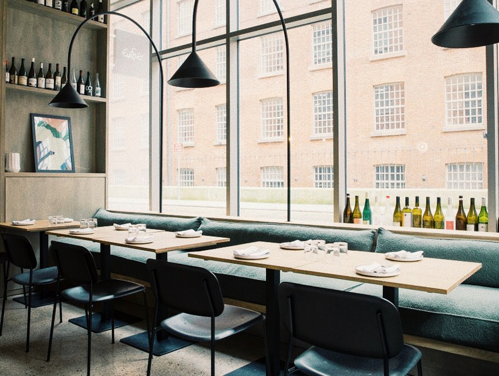
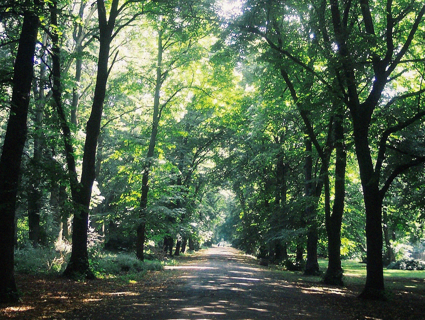

Nick's Best Spots in Manchester
All the places Manchester-resident Nick Jones will hit up first once lockdown is ended.
-
Partisan Collective
"Partisan is a collective and volunteer-run space for independent, community-led DIY and cultural projects. As a collective and cooperative, Partisan a great place to meet people."
Partisan Collective
19 Cheetham Hill Rd
Manchester
M4 4FY
UK
partisancollective.net
-
Islington Mill
"Islington Mill has great parties, and from time to time they have art exhibitions and stuff. Besides me there's a community of studios and musicians/bands. If you're into music it's a must!"
Islington Mill
James St
Salford
M5
UK
islingtonmill.com
-

Erst
"Erst is a natural wine bar and restaurant located in Ancoats. It serves up a great spread of small plates - food you can't get anywhere else. I also serves up great wine and a great vibe.
Erst Manchester
9 Murray Street
Ancoats
M4 6HS
UK
erst-mcr.co.uk
-
Yuzu
"Located in Chinatown, Yuzu is known for its beautifully-prepared sashimi, tempura and noodle bowls, as well as its legendary “kara-age” fried chicken, my personal favourite."
Yuzu Manchester
39 Faulkner Street
Manchester
M1 4ED
UK
yuzumanchester.co.uk
-
Pollen Bakery
"The best bakery in Manchester - and the best place tp go for breakfast / brunch / lunch. Pollen specialises in sourdough bread & viennoiserie baked goods, plus coffee."
Pollen Bakery
8 New Union Street
Manchester
M4 6FQ
UK
pollenbakery.com
-

Alexandra Park
"Right in the heart of where I live. Beautiful park that's been renovated. Great day out when the weather's nice. Manchester Carnival takes place here in Summer time too."
Alexandra Park
180 Russel Street
Manchester
M16 7JL
UK
alexandraparkmanchester.org